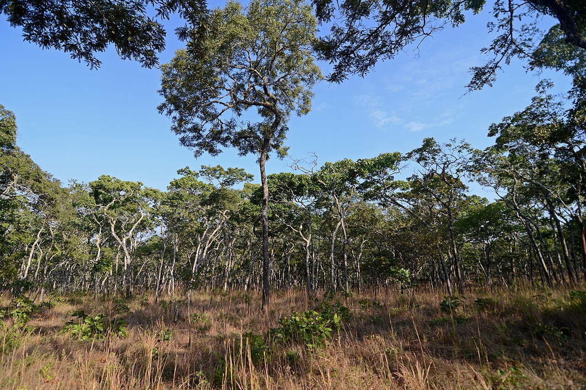

Community-Based Forest Management (CBFM)
Tanzania’s flagship model — villages hold the rights and revenue to keep the woodland standing

What it is
Participatory and Community-Based Forest Management (PFM/CBFM) hands villages the rights and the revenue to harvest, sell and protect their own woodland. It is one of Africa’s flagship models for keeping miombo standing, and a natural reference for South–South exchange across the region (Blomley & Iddi, 2009).
How it works
- Transfer legal rights over a defined village forest to the community
- Agree a management plan and by-laws — what is harvested, where, and how much
- Let the village keep the revenue from sustainable timber, charcoal and NTFPs
- Patrol and protect against illegal cutting, with enforcement powers held locally
- Reinvest income in the community, tying livelihoods to a standing forest
Key facts
- Champion country
- Tanzania (PFM/CBFM)
- Scale
- Millions of hectares under village management
- Rights
- Community holds harvest, sale & protection rights
- Co-benefits
- Reduced deforestation · local revenue · tenure
- Exchange
- A South–South reference model (REM)
CBFM is a working answer to the question every dryland forest faces — how to let people use the forest while keeping it (Blomley & Iddi, 2009). By making the woodland a community asset with rights and revenue attached, it aligns livelihoods with conservation at scale.
WOCAT classification
- Measures
- MManagement
- WOCAT group
- Forest / woodland management — participatory
- Degradation addressed
- DeforestationForest degradation
Classified per the WOCAT SLM-Technologies classification.
✦Source and links
- • Sustainable forest management for wood energy (profile)
- • Managing the woodland — and bringing it back
- • Regional Exchange Mechanism — South–South exchange
Sources (APA, 7th ed.).
- Blomley, T., & Iddi, S. (2009). Participatory forest management in Tanzania: 1993–2009. Lessons learned and experiences to date. Ministry of Natural Resources and Tourism, Forestry and Beekeeping Division, United Republic of Tanzania.
- Ryan, C. M., Pritchard, R., McNicol, I., Owen, M., Fisher, J. A., & Lehmann, C. (2016). Ecosystem services from southern African woodlands and their future under global change. Philosophical Transactions of the Royal Society B, 371(1703), 20150312. https://doi.org/10.1098/rstb.2015.0312